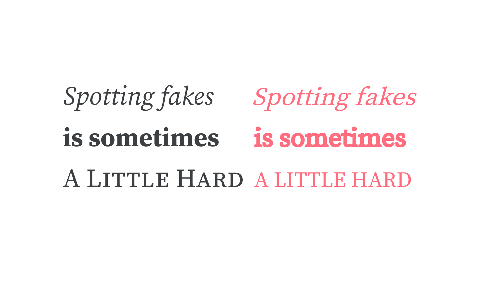

Faux, fake, pseudo, or synthesized
By Google Fonts Knowledge contributors · Google Fonts Knowledge.
Original article · Source on GitHub · CC BY-SA 4.0. Text, illustrations and existing credits reproduced from the licensed Knowledge repository. Open Shelf adapted the layout and links; these adaptations are also CC BY-SA 4.0. No endorsement implied.
When software attempts to emulate an italic style, bold (or other) weight, ordinals, or small caps in lieu of actual font files for those variants, they’re referred to as “faux,” “fake,” “pseudo,” or “synthesized” italics (or bolds, etc.).

CAPTION: On the left, true italics, bolds, and small caps; on the right, faux italics, faux bolds, and faux small caps. Note how the faux italic has radically different forms, the faux bold appears too crowded, and the faux small caps are considerably lighter in weight.
Typically this occurs in graphic design software when the user is attempting to use a bold weight (etc.) but doesn’t have that font installed (or activated) on their machine; or on the web where a website is attempting to render a bold weight (etc.) but isn’t actually serving that web font to end users.